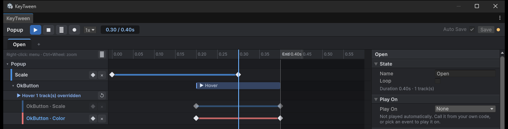

Nested Prefabs
These features are for a shared prefab, such as a button, placed inside another prefab, such as a popup.
- Child call: the popup's state calls the button's state.
- Override: changes the button's animation only inside the popup.
Adding a Child Call
A child call plays a state of a child prefab at a set time in the parent state.
- Double-click an object row, or right-click and choose Add Child Call ▸ child ▸ state.
- Drag the bar that appears on the parent's timeline to change its time.
- In the inspector, set the Child, State and Time.
States that are already called are checked and cannot be chosen.
How Child Calls Play
- The parent state's length includes
call time + child state length. - Calling
Completeon the parent brings the child to its end values as well. - If the parent is canceled, a child that has already started keeps playing.
- Cycles of states calling each other are cut off at depth 8.
Overriding a Track
An override changes the child's animation per track, and only inside the current prefab. Under a child call, the child state's tracks are shown shifted by the call time. The original tracks are dimmed and read-only.
- Click a dimmed track under the child call. Only that track is overridden.
- Edit its keys. The edits go into the override, and the original prefab is not changed.
In the screenshot below, Popup's Open state calls OkButton's Hover at 0.2 s and overrides OkButton's Color track inside the popup only. The overridden Color track has a blue name and an ×. The Scale track, not overridden, is dimmed. The child call's heading shows how many tracks are overridden and a ↺.

Editing the Original Prefab
Overrides are saved in the outer prefab's own KeyTween. Only the changed tracks are saved, so when you edit other tracks in the original, the popup picks up those changes.
| In the original prefab | Overridden track | Track not overridden |
|---|---|---|
| Change key values or times | The popup keeps its values | The popup follows |
| Add a track | — | It appears in the popup too |
| Delete a track | It stays in the popup | It is removed from the popup too |
Overrides on Several Levels
When several levels, such as screen > popup > button, override the same track, the outermost level wins. This is the same rule as Unity's nested prefabs.
- Overridden tracks have blue names.
- Their tooltip shows which prefab overrides them.
Reverting Overrides
| Control | What it reverts |
|---|---|
| × on a track | The outermost level of that track's override |
| ↺ on the child call title | All overrides at the outermost level (like Unity's Revert All) |
| Inspector › Overrides › Revert | Overrides made on a scene instance |